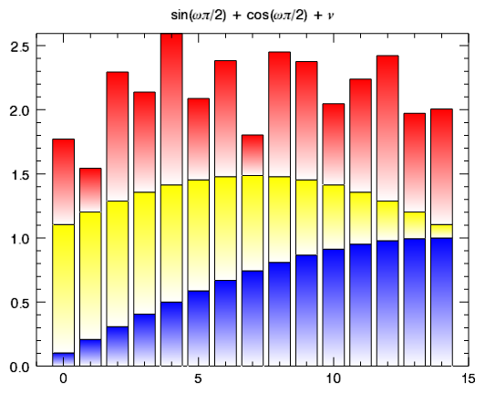

IDL 8.0 provides some ground-breaking functionality to make data visualization and IDL programming easier than ever. The new graphics functions allow you to create visualizations on the fly or within a program. You can also use create graphics singly or in batches and save the output files. The language enhancements make IDL programming more intuitive and straightforward.
These features, along with a simplified IDL Workbench, will streamline the workflows you use to visualize and analyze your data. And most importantly, IDL 8.0 maintains backward compatibility for your existing IDL code.
IDL 8.0 provides new graphics functions to easily visualize your data. Rather than writing a program, you can quickly type just a few lines to display a plot, map, image or other visualization. For example, type or paste the following into the IDL command line:

; Define the data set.
data1 = SIN((FINDGEN(15)+1)/15*!PI/2)
data2 = data1 + COS((FINDGEN(15))/15*!PI/2)
data3 = data2 + 0.25 + RANDOMU(1,15)
; Plot three bars, stacked.
b1 = BARPLOT(data1, BOTTOM_COLOR="white")
b2 = BARPLOT(data2, BOTTOM_VALUES=data1, $
FILL_COLOR='yellow', BOTTOM_COLOR="white", /OVERPLOT)
b3 = BARPLOT(data3, BOTTOM_VALUES=data2, $
FILL_COLOR='red', BOTTOM_COLOR="white", /OVERPLOT)
; Add a title.
b1.TITLE='$sin(\omega\pi/2) + cos(\omega\pi/2) + \nu$'
; Save to a PDF file.
b1.SAVE, 'barplot.pdf', /LANDSCAPE
With the new graphics functions, it is easy to create complex plots, modify the graphics on the fly, and then output to multiple file formats. These new graphic functions are designed to replace the use of Direct Graphics and iTools (although those procedures still exist).
See the Graphics examples for many ways you can use the new graphics functions.
|
Graphics functions include: |
These graphics helper functions enhance graphics:
|
Features of the new graphics include:
IDL 8.0 provides major language enhancements that are intuitive and easy to use.
Use !NULL or empty brackets [ ] to create an empty array that can be used for array concatenation. Other uses include comparison with undefined variables or to test for null objects or pointers. !NULL or empty braces { } can also be used for structure concatenation. Finally, !NULL can be used to assign to variables or function results to free memory.
Automatic garbage collection eliminates the complexities of manual object and pointer memory management. IDL now performs automatic garbage collection on all data types so that when a variable is destroyed or goes out of scope, the variable’s memory is automatically reclaimed. The HEAP_REFCOUNT routine was added to facilitate working with automatic garbage collection. It returns the current reference count for a pointer or object reference.
A list is a compound data type that can contain elements of any IDL data type, including scalars, arrays, structures, pointers, object references, and other lists.
Lists have the following properties:
See the new LIST function for more information.
A hash is a compound data type that contains key-value pairs of different data types, including any mixture of scalars, arrays, structures, pointers, object references, lists, and other hashes.
Hashes have the following properties:
See the new HASH function for more information.
Use the FOREACH operator to iterate through the values of an array, list, or hash. The FOREACH statement executes one or more statements for each element of a variable. Within the FOREACH loop, the element’s value and (optionally) the key or index to which the element corresponds are available.
When subscripting an array using scalar subscript values, you can use negative integers to index the array from the last element of the dimension being indexed. For example, the statement
PRINT, array[-1]
is a simple way to select the last element of array without knowing how many elements array contains. The above statement is equivalent to:
PRINT, array[N_ELEMENTS(array)-1]
Similarly, to select the third element from the end of a the array:
PRINT, array[-3]
You can select an element of a multidimensional array using negative subscript values. For example:
mdstrarr = [['row1_col1', 'row1_col2', 'row1_col3'], $
['row2_col1', 'row2_col2', 'row2_col3'], $
['row3_col1', 'row3_col2', 'row3_col3']]
The following two statements print the same element in mdstrarr:
PRINT, mdstrarr[-3,-2]
PRINT, mdstrarr[0,1]
IDL Prints:
row2_col1
row2_col1
For more information, see Using Scalar Values as Array Subscripts .
The ISA function tests for valid variables, types, structure names, object names, or whether an element is an array. The TYPENAME function returns information about a variable's type, structure name, or object class.
The object syntax has been simplified for all IDL object classes, making it more like standard programming languages.
myContainer = IDL_Container( )
myContainer.Add, IDLgrModel()
print, myContainer.Count()
myContainer.Cleanup
The new IDL_Object class is designed to be the base class for all user-defined classes. By subclassing from IDL_Object, you gain the benefits of the new object syntax, as well as the potential for operator overloading (described below). In addition, you can use a simplified "." syntax to automatically call your GetProperty and SetProperty methods. For example,
myObject = MyClass()
print, myObject.COLOR
myObject.COLOR = "red"
Here, we are creating the object using the new syntax. In the second line, the COLOR property is being retrieved. IDL will automatically call your GetProperty method on MyClass with the COLOR keyword. For the third line, IDL will automatically call your SetProperty method with the COLOR keyword.
Operator overloading is an advanced feature to perform a specific object method when an operator is performed on that object. For example, you might want to define the "+" operator, such that when two objects are added together, it combines the internal properties in a predetermined manner and returns a third object with the results. By subclassing from IDL_Object , you can override all of IDL's standard math operators, as well as the logical operators, true/false, N_ELEMENTS and SIZE, HELP and PRINT, array indexing, and the FOREACH statement.
See the list of operators that can be overloaded.
The Workbench consists of three basic views for an uncluttered work space. Just the project explorer, editor and console/command line are shown.
IDL 8.0 allows you to save visualizations in Adobe Acrobat's portable document format (PDF). This functionality supports saving multiple pages and gives you the option to save as vector or bitmap graphics. Use the new IDLgrPDF object class or save from the graphics window .
The online help has been reorganized to make common items easily accessible. Some documentation is available in PDF format in the
help/pdf
directory of your IDL installation.
This material includes material on connectivity bridges, application and object programming, external development, and scientific data format examples.